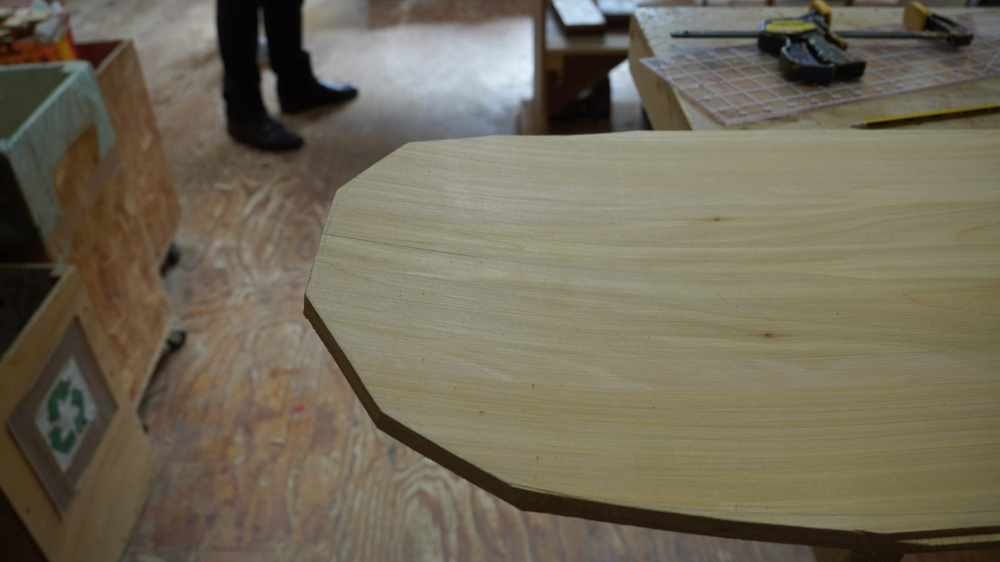
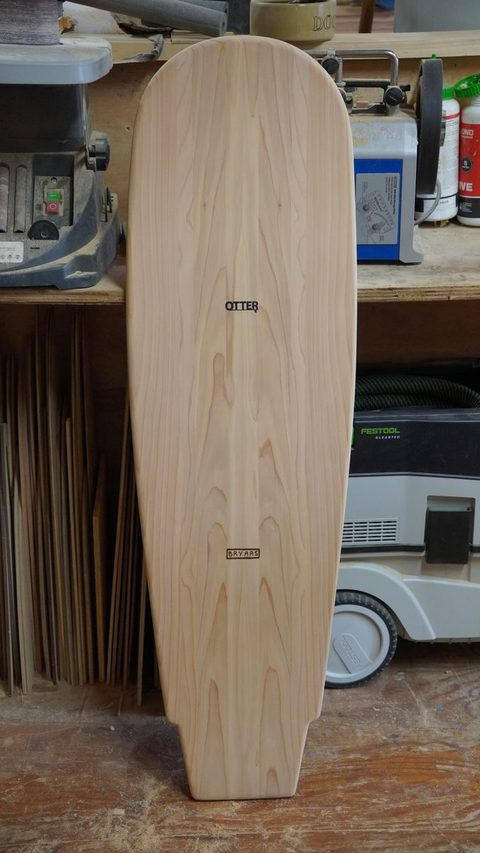
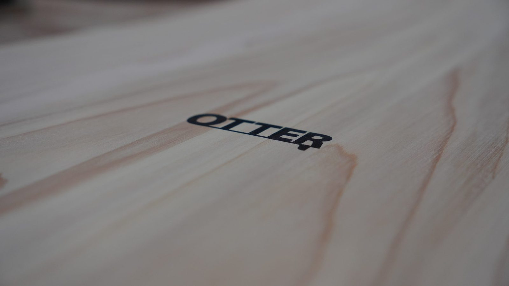
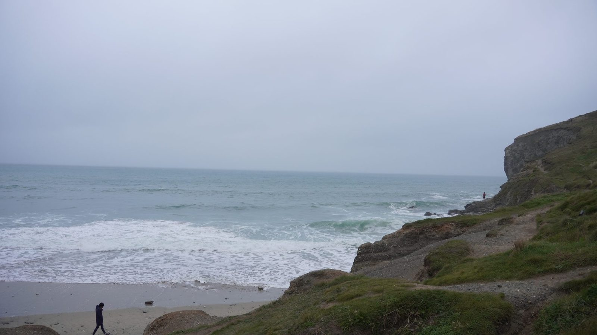
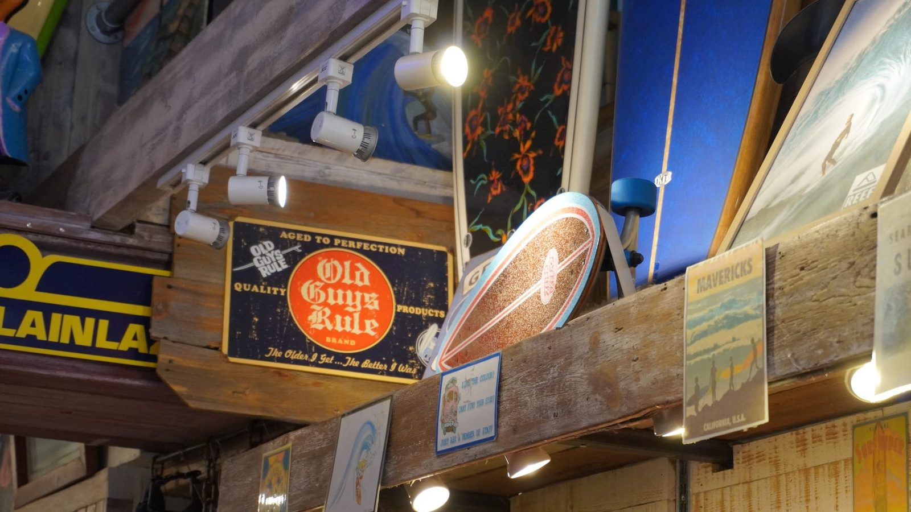

The course
A day in the workshop
Timber on the bench, outline and shaping, maker's marks, then the finished board.
Wood / water / prize day
Won a competition, prize was a day course making a wooden belly board. A blank, a shape to get right, and a day to do it in.
To be written up.
To be written up.
The course
Timber on the bench, outline and shaping, maker's marks, then the finished board.
The object
Wood, curve, edge, grain, water. Small project, still punishes you for rushing the last few decisions.





